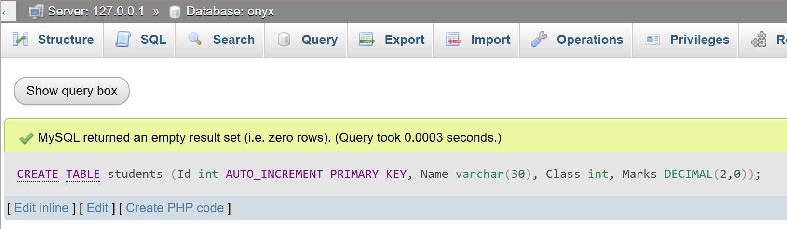

Database security ensures that data is accessed only by authorized users and protected from threats like unauthorized access, data leaks, or cyberattacks.
SQL Datatypes
CHAR
The CHAR data type is used to store fixed-length character strings. When you define a CHAR column, you specify its length, and the system always reserves that exact amount of space. If the stored string is shorter, the remaining space is padded with blanks. This makes CHAR efficient for storing data where the length is consistent, such as country codes or fixed-format identifiers.
VARCHAR
VARCHAR stores variable-length character strings, which means it only uses as much space as the actual string requires, plus a small amount of overhead. This is more space-efficient than CHAR when storing strings of varying lengths, such as names or addresses. The maximum length must be defined when creating the column.
BINARY
BINARY is similar to CHAR but stores fixed-length binary data instead of characters. This is useful for storing data like images or encrypted information where exact binary representation must be preserved.
VARBINARY
VARBINARY stores variable-length binary data. It works like VARCHAR but for binary files or data streams. This allows for efficient storage when the size of the binary data varies.
TINYBLOB
TINYBLOB is a Binary Large Object designed to store very small amounts of binary data, such as thumbnails or small icons. It supports up to 255 bytes.
TINYTEXT
TINYTEXT stores small amounts of text data, up to 255 characters. It’s useful for brief text fields like short comments or tags.
TEXT
TEXT is intended for larger amounts of textual data, such as descriptions, articles, or notes. It can store up to 65,535 characters and is useful when you expect more extended content than VARCHAR can efficiently handle.
LONGTEXT
LONGTEXT stores very large amounts of text, up to 4 gigabytes in size. It is suitable for extensive documents, such as logs, HTML content, or long-form articles.
ENUM
ENUM defines a string column that can only take one value from a predefined list of allowed values. This ensures data integrity by restricting input to specific options, such as 'Male' or 'Female', or status values like 'Pending', 'Approved', or 'Rejected'.
BIT
BIT stores bit-field values and is commonly used to represent boolean flags or binary indicators where each bit has a specific meaning.
TINYINT
TINYINT is a very small integer type that typically occupies 1 byte and can represent values from -128 to 127 in signed mode or 0 to 255 if unsigned. It’s ideal for small numeric ranges, such as age or small counters.
BOOLEAN
INTEGER (INT)
INTEGER or INT is a common numeric type used to store whole numbers. It typically uses 4 bytes and can represent large ranges of positive and negative numbers, suitable for general counting or identification purposes.
FLOAT and DOUBLE
FLOAT and DOUBLE are approximate numeric types that store decimal numbers using floating-point representation. FLOAT uses less storage but less precision, while DOUBLE uses more storage and provides higher precision. They are useful when exact decimal precision is not critical, such as scientific calculations.
DECIMAL
DECIMAL (or NUMERIC) is a fixed-point numeric type that stores exact decimal numbers with a defined precision and scale. It is often used for financial data where precise decimal representation is required to avoid rounding errors.
DATE
The DATE data type stores calendar dates (year, month, and day) without time. It is useful for birthdays, appointment dates, or any date-only information.
DATETIME
DATETIME stores both date and time values together, including hours, minutes, and seconds. This is useful for timestamps, event logs, or any data requiring full temporal detail.
Questions of DBMS
1. What is Database and DBMS? List out the advantages and disadvantages of DBMS.
A database is an organized collection of data that can be stored either physically or digitally to allow for easy access and management. For example, a physical phonebook represents a manual database, while an online banking platform serves as a digital one.A Database Management System (DBMS) is a software tool designed to handle digital databases, offering a user-friendly interface for both individuals and applications to efficiently interact with stored data.Some benefits of using a DBMS include minimizing data redundancy (eliminating repeated information), enhancing data integrity (ensuring data is accurate and remains consistent during storage, transfer, and retrieval), boosting data security, providing quick data access, supporting backup and recovery processes, and enabling multiple users to work with the database at the same time without conflicts.However, DBMSs also have drawbacks such as added system complexity, higher costs, slower performance compared to basic file systems due to features like security and data integrity, and possible security risks if not properly maintained.
2. Differentiate between file processing system and DBMS. Give at least four points.
| File Processing System | DBMS |
| Data Redundancy is High, because data is stored in multiple separate files. |
Data Redundancy is Low, data is centralized to minimize duplication |
| Data Consistency is difficult to maintain due to redundant data. |
Data Consistency is ensured by DBMS. |
| Data Security is limited or present in form of manual security controls. |
Data Security is built-in security features to control access. |
| Data Access is mostly sequential and slower access. |
Data Access is efficient, flexible access using querying languages like SQL.
|
3. Explain the different models of DBMS with advantages and disadvantages.
There are different types of Database Management System (DBMS) models used to organize and manage data. Each type has its own way of storing data, along with pros and cons.
1. Hierachical Model
Data is arranged like a tree, with a parent-child relationship. Each child has only one parent.
Pros
- 1. Easy to understand.
- 2. Works well for data with a clear structure (like a company org chart).
Cons
- 1. Hard to change the structure.
- 2. Can’t handle many-to-many relationships well.
- 3. Sometimes needs the same data to be stored in multiple places.
2. Network Model
Similar to the hierarchical model but allows more connections between data (many-to-many relationships) using links called pointers.
Pros
- 1. More flexible than the hierarchical model.
- 2. Good for complex data relationships and quick access.
Cons
- 1. Harder to design and maintain.
- 2. You need to understand how the data is physically stored..
3. Relational Model
Data is stored in tables with rows and columns. This is the most common type of DBMS today.
Pros
- 1.Simple and easy to use.
- 2. Uses SQL, a powerful query language.
- 3. Keep data accurate and reduce data redundancy
Cons
- 1 Maybe slow with large data.
- 2. Not ideal for storing data with tree or graph-like structures.
4. Object-Oriented Model
Data is stored in tables with rows and columns. This is the most common type of DBMS today.
Pros
- 1. Simple and easy to use.
- 2. Uses SQL, a powerful query language.
- 3. Keep data accurate and reduce data redundancy
Cons
- 1. Maybe slow with large data.
- 2. Not ideal for storing data with tree or graph-like structures.
4. What is a relational database? How is it different from other database models?
A relational database is a type of database that stores data in tables, also called relations. Each table has rows (called records) and columns (called attributes). To connect data across different tables, keys are used. This helps keep the data accurate (maintains data integrity) and avoids repeating the same information (reduces redundancy).
The most common language used to work with relational databases is SQL (Structured Query Language).
How Relational Databases Are Different from Other Models:
-
Compared to the hierarchical model:
Instead of organizing data like a tree (parent-child structure), relational databases use tables, which are more flexible and easier to manage.
-
Compared to the network model:
Rather than using complex links or pointers to connect data, relational databases use foreign keys and joins to handle many-to-many relationships.
-
Compared to object-oriented databases:
Relational databases are simpler and more commonly used, though they might not handle complex data types (like images or designs) as well.
5. What is data redundancy? How does DBMS help in reducing it?
Data redundancy refers to the unnecessary repetition of the same data in different parts of a database. For example, if a customer's contact details are saved in multiple separate files, updating that information would require changes in all those files. If even one file is missed, the data becomes inconsistent. A Database Management System (DBMS) helps avoid this issue by storing data in a central location. It uses relationships between tables and applies normalization to split large tables into smaller, related ones. These tables are linked through keys, allowing shared data to be stored just once. As a result, updates can be made in one place only, which improves data accuracy, reduces storage needs, and saves time.
6. Write differentiate between centralized and distributed database systems.
| Centralised Database | Distributed Database |
|
All data is stored in one central location, making it easier to control and manage.
|
Data is spread across different physical locations, often in different regions or branches.
|
|
Users far from the main server may experience slower data access.
|
Data is spread across different physical locations, often in different regions or branches.
|
|
If the central server goes down, the entire system becomes unavailable.
|
More fault-tolerant—if one location fails, others can still operate.
|
|
Simpler to manage, back up, and secure due to everything being in one place.
|
Harder to manage and keep synchronized because of multiple sites.
|
|
Costs less to set up and maintain since there's only one server to handle.
|
Security can be harder to maintain because there are more access points and potential risks.
|
7. Who is Database Administrator (DBA)? What are the major responsibilities of DBA?
A Database Administrator (DBA) is a professional who takes care of the setup, operation, and protection of a database system. Their job is to make sure the database works smoothly, stays secure, and is always available for users and software applications.
Key responsibilities of a Database Administrator
- 1. Setting up and configuring database software (DBMS).
- 2. Creating and managing database objects like tables, indexes, and views.
- 3. Checking and improving database performance.
- 4. Controlling user access, roles, and permissions to protect data.
- 5. Performing routine backups and creating plans to recover data if it’s lost.
- 6. Maintaining data accuracy and following database rules and standard.s
- 7. Installing updates and patches to the database software.
- 8. Working closely with developers and IT teams to support applications and make sure the database fits their needs.
8. Define normalization. Explain 1NF, 2NF and 3NF with suitable examples. Explain the normalization process with examples.
Normalization is the method of arranging data in a database to minimize repeated information and keep the data accurate. It works by splitting big tables into smaller, connected tables using keys. This approach makes data easier to manage, prevents problems like errors during updates or deletions, and helps the database run more efficiently.
First Normal Form (1NF):
A table is in 1NF if :
- -All values in each coloumn are atomic.
- -Each record is unique.
Example
| Roll no. | Name | Hobbies |
| 1 |
David |
Music |
| 1 |
David |
Coding |
| 2 |
Onyx |
Football |
| 2 |
Onyx |
Art |
Second Normal Form (2NF):
A table is in 2NF if:
- -If it is in 1NF
- -There is no partial dependency
Example
Table 1
| Name | Roll no. |
| Manav | 909 |
| Maulik | 910 |
Table 2
| Roll no. | Marks |
| 909 | NG |
| 910 | NG |
Third Normal Form (3NF):
A table is in 3NF if:
- -If it is in 2NF
- -All attributes are only dependent on the primary key, and not on any other non-key attribute
Example
Table 1
| Id no. | Name | Roll no. |
| 1 | Manav | 909 |
| 2 | Maulik | 910 |
Table 2
| Roll no. | Marks |
| 909 | NG |
| 910 | NG |
9. Explain the terms: primary key, foreign key, and candidate key with examples.
Primary Key
A Primary Key is a field (or combination of fields) in a table that uniquely identifies each record.
It cannot contain NULL values or duplicates.
Example: In the Student table below, "Roll No." is the primary key.
| Name | Roll No. |
|---|
| Oscar | 919 |
| Niyam | 918 |
Foreign Key
A Foreign Key is a field in one table that refers to the primary key of another table.
It is used to establish a relationship between two tables.
Example: In the table below, "Roll No." is a foreign key that refers to the "Student" table above.
| Roll No. | Club |
|---|
| 919 | Computer |
| 918 | Art and Culture |
Candidate Key
A Candidate Key is any column (or set of columns) in a table that can qualify as a primary key.
It must be unique for each record and cannot contain NULL values.
A table can have multiple candidate keys, but only one of them is selected as the primary key.
Example: In the table below, both "Email" and "Phone Number" can uniquely identify a person. Hence, both are candidate keys.
| Name | Email | Phone Number |
|---|
| Jaya | jaya@example.com | 9876543210 |
| Ravi | ravi@example.com | 9123456780 |
10. What is SQL? Explain its components and common functions.
SQL (Structured Query Language) is a standard language used to manage and manipulate relational databases. It allows users to create, retrieve, update, and delete data from a database.
Components of SQL:
- DDL (Data Definition Language): Commands like CREATE, ALTER, DROP used to define database structure.
- DML (Data Manipulation Language): Commands like SELECT, INSERT, UPDATE, DELETE used to manipulate data.
- DCL (Data Control Language): GRANT and REVOKE, used to control access to data.
- TCL (Transaction Control Language): COMMIT, ROLLBACK, SAVEPOINT to manage transactions.
Common SQL Functions:
- Aggregate Functions: COUNT(), SUM(), AVG(), MAX(), MIN()
- String Functions: CONCAT(), LENGTH(), LOWER(), UPPER(), SUBSTRING()
- Date Functions: NOW(), CURDATE(), DATEDIFF()
Key DBMS Terminologies
1. Data Dictionary
A Data Dictionary is a centralized repository of information about data such as meaning, relationships to other data, origin, usage, and format. It helps users and developers understand the structure and constraints of the database.
2. Primary Key
A Primary Key is a unique identifier for a record in a table. It ensures that no two rows have the same value in that column, and it cannot be null.
3. Relationship
A Relationship in a database refers to a connection between two or more tables using keys (typically primary and foreign keys) to link related data.
4. Data Manipulation Language (DML)
DML is a subset of SQL used to insert, update, delete, and retrieve data from the database. Examples: SELECT, INSERT, UPDATE, DELETE.
5. Structured Query Language (SQL)
SQL (Structured Query Language) is the standard programming language used for managing and manipulating relational databases.
6. Data Integrity
Data Integrity refers to the accuracy, consistency, and reliability of data during storage, retrieval, and processing. It ensures that data is correct and trustworthy.
7. Data Definition Language (DDL)
DDL is a subset of SQL used to define and modify the structure of database objects such as tables, schemas, and indexes. Examples: CREATE, ALTER, DROP.
8. Data Security
Data Security involves protecting data from unauthorized access, breaches, or corruption. Techniques include authentication, authorization, encryption, and backups.
9. Database System
A Database System consists of a database (organized collection of data) and a Database Management System (DBMS) that enables users to store, retrieve, and manipulate data efficiently and securely.
Write SQL queries for the following tasks:
Create a table named students with the fields: Id, Name, Class, and Marks.
CREATE TABLE students (Id int AUTO_INCREMENT PRIMARY KEY, Name varchar(30), Class int, Marks DECIMAL(2,0));
Output:

Insert records into the students table with appropriate values.
Insert records into the students table with appropriate valuesINSERT INTO students VALUES (1,'Onyx', 12, 50), (2,'', 12, 0),(3,'Anita',12,33),(4,'',12,22);.
Output:
Display all records from the students table.
SELECT * FROM students;
Output:
Update the marks of a student whose name is 'Anita' to 85.
UPDATE students SET Marks = 85 WHERE Name = 'Anita';
Output:

Delete the record of the student with id = 3.
DELETE FROM students WHERE Id = 3;
Output: